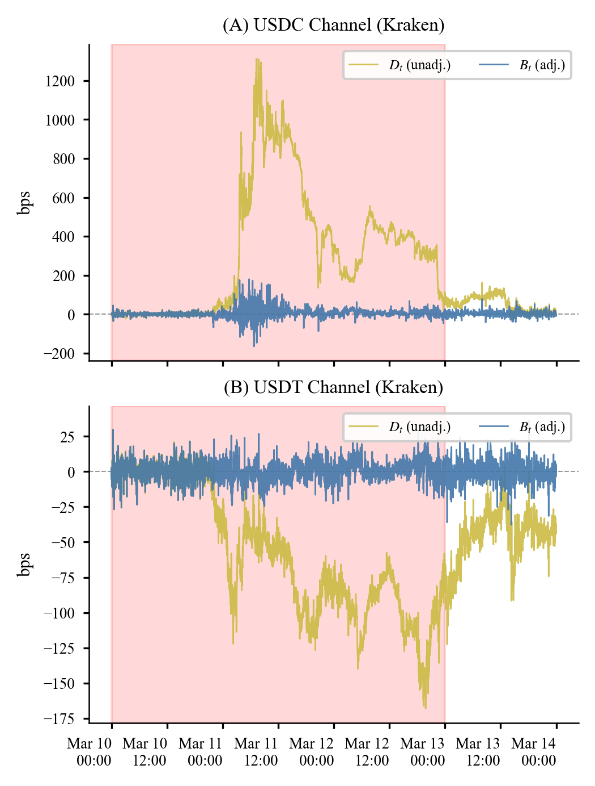

Financial mathematics, quantitative research, and market structure
Researching markets where data, incentives, and frictions meet.
I am a University of Chicago financial mathematics student focused on quantitative research, trading, and market microstructure. This site collects my research, projects, and selected work as it develops.
- 2026 IAQF
- Winning paper
- UChicago
- M.S. Financial Mathematics
- 2025 CME
- 2nd of 1,864
Profile
About
I work on quantitative problems where statistical modeling has to survive real market constraints: noisy data, transaction costs, release lags, liquidity limits, and behavioral stress. My background spans financial mathematics, economics, portfolio research, macro forecasting, and applied trading competitions.
Current interests include market microstructure, systematic macro signals, stablecoin and crypto market structure, fixed income relative value, and tools that make research more reproducible.
Featured Research
Cross-Currency Dynamics in Cryptocurrencies
Winning Paper, IAQF Student Competition 2026
This paper studies how the March 2023 Silicon Valley Bank crisis moved through crypto markets after USDC de-pegged. Using 1-minute exchange data from Binance, Coinbase, and Kraken, the project separates Bitcoin quote-currency fragmentation into a stablecoin peg layer and a USD-adjusted arbitrage layer.
The central result is a sharp timescale separation: the adjusted BTC basis mean-reverted in about 0.6 minutes during the crisis, while the USDC peg deviation persisted for roughly 572 minutes. The finding localizes the durable failure to the stablecoin reserve layer while showing how peg stress still affected liquidity, volatility, cross-exchange basis, and executable arbitrage.
- Built a high-frequency pipeline across major crypto venues.
- Measured stablecoin-driven dispersion versus true arbitrage residuals.
- Mapped empirical failure channels to stablecoin reserve and redemption policy.

Paper
Open PDFResume
Selected Experience
Quantitative Research
Macro forecasting, market microstructure, statistical modeling, data engineering, and walk-forward model evaluation.
Portfolio Work
Fixed income research, yield curve modeling, Bloomberg tools, relative value analysis, and portfolio diagnostics.
Leadership
Trading competition leadership, startup operations, teaching, and student investment organization experience.